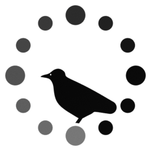
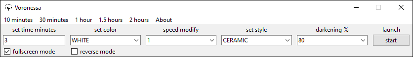
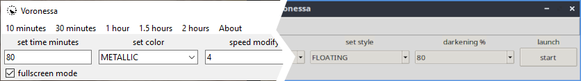
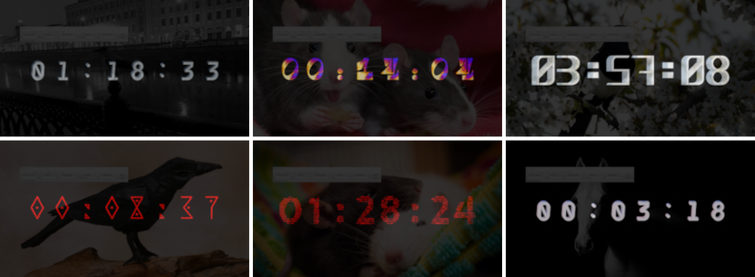
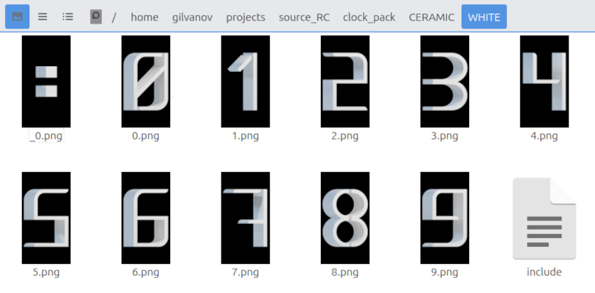

Voronessa
Voronessa is a tool for counting down to the start of a broadcast.
Download Installer for Windows on GitHub: download link
For Linux users, visit the repository on GitHub: repository link


- Short description -
- Counts down from the setpoint (the minimum value is 1 minute, the maximum is 5940 minutes).
- Cross-platform (tested on windows and popular linux distributions).

- A style system, pre-defined styles, and the ability to customize your own.

- How to start using? -
- Usage features -
- To close the countdown window, please use a double-click on the mouse or the Escape key.
- Using your own styles -
- The clock_pack folder contains folders that define styles.
- The folder defining the style contains folders with colors of this style and the service file "!empty" which indicates that this style should be enabled when the program is launched.
- If the file "!empty" is missing or the name is changed, the style will be absent after the program is launched.
- The folder defining the style color contains image files from 0.png to 9.png that define the dial and the _0.png file defining the separator, it also contains the "include" file that includes the style color when the program is launched.
- If the file "include" is missing or the name is changed, the color will be absent after the program is launched.

- The image file must be in the format .png with a resolution of 192x360.
- Have an opaque black background to avoid display problems.
- The file names must be in decimal from 0 to 9, and the file name must match the digit in the image. File name for separator _0.png
- _0.png = :
- 0.png = 0
- 1.png = 1
- 2.png = 2
- 3.png = 3
- etc.
- To sum up, to create your own style, you need:
- Create a folder in the clock_pack directory with the name of your style.
- Place or create a "!empty" file without an extension in this style folder.
- Create a folder with the name of the color in this style folder.
- Place or create a "include" file without an extension in this color folder.
- Place the pre-prepared images in the color-determining folder.
- Done!
- One more thing -
- When creating the built-in styles, I used various fonts, all of them are "Free for commercial use" and "OFL". The list of fonts used when creating styles is in the file "fonts_used.txt".
- File contents "fonts_used.txt":
- fonts used in styles:
- Replicant Font by João G. Gonçalves
- Exotica Font by Ivan Vetrov
- Sankofa Font by Batsirai Madzonga
- Accuratist Font by Elena Shkerdina, Ivan Gladkikh
- BOX Font by Barry Shawn
- Maori Font by Rob Hindley
- JSFN Font by George Arnold
- LT Basix Font by LyonsType
- Balam Slab Font by Raúl Plancarte
- Grith Font by Yosi Nasution